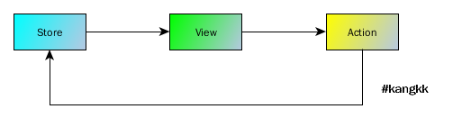
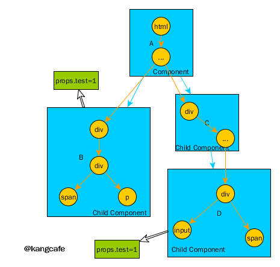
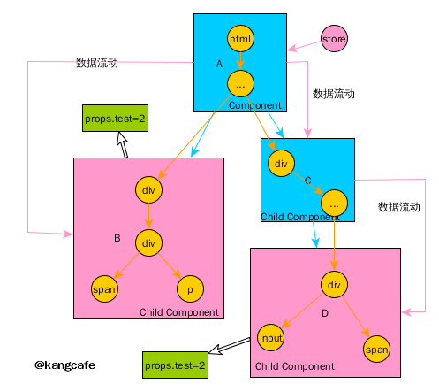
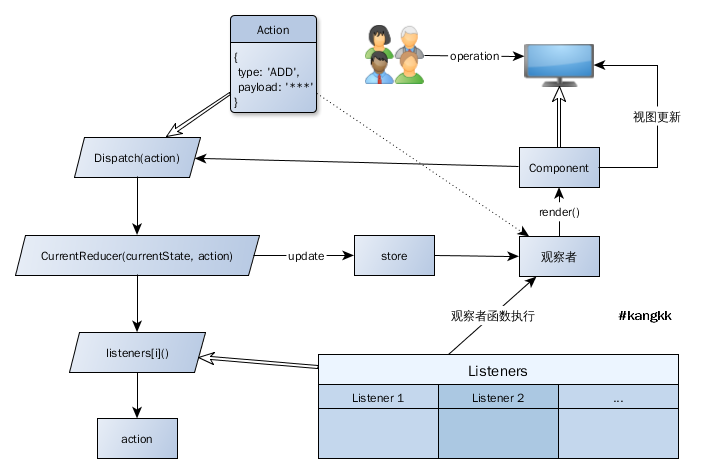
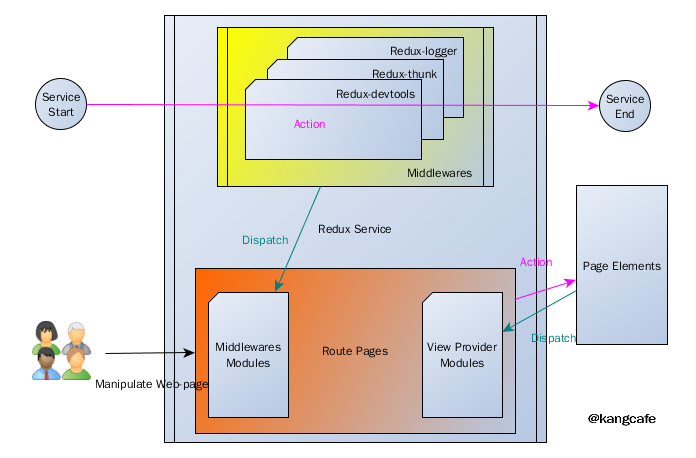
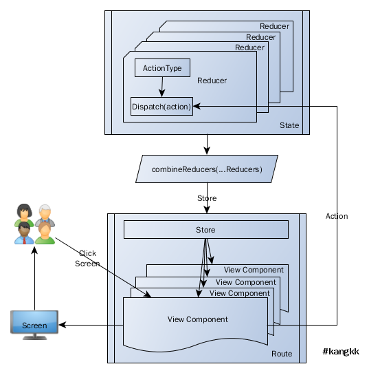
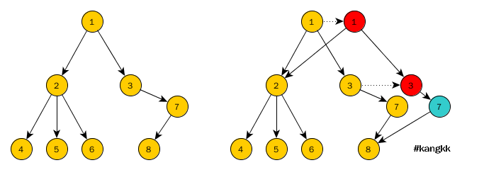

redux

Redux is a predictable state container for JavaScript apps[1].
Redux特性
在过去的十几年里web page一直都以指数递增的方式发展，无论是概念上还是编程上想要彻底读懂这门设计的艺术已经变得不可为，如今在许多大型网站中的一个页面从DOM与Event的微观角度往往聚集着一系列复杂并琐碎的行为功能[2]，它们聚合在一起构成了我们今天可以在浏览器端可操作的视图，正是如此，怎样管理这些行为功能被提上日程，诸多才华横溢的工程师们引申出状态管理的概念，制作出许多优秀的作品，如Redux、flux、flummox、mobxjs、refluxjs、martyjs、javascript-state-machine、vuex等，其中又以redux和flux最为流行。

Redux诞生的出发点是作为一个javascript应用状态（state）容器，借鉴flux的数据单向流动、elm的The Elm Architecture、函数式编程、柯里化（Currying）函数、组合模式（Composite pattern）的等思想。将视图（view）中可操作的这些行为类比为动作（action），每个动作传递都附带状态（state）信息，状态引导动作对redux状态容器store更新进而对视图更新，store对状态（state）进行同一管理，可以说store可预测状态容器是redux的骨架也不为过。
Redux原则
无论什么框架都会设定一些属于它的规则，规则恒定，附者云起进而形成生态，react如是redux也是如此，在redux中所以规定了三条原则（Three Principles），即“Single source of truth”、“State is read-only”和“Changes are made with pure functions”，用于描述在redux整个生命周期内怎样去管理和维护store树。
- Single source of truth：唯一数据源。State被存储在一颗唯一的
object tree上，即store对象树。 - State is read-only：State只读。在每个组件（Component）或者reducer等内部，State树内所有
key->value只读。 - Changes are made with pure functions：这里的纯函数（pure functions）特指reducer函数。State树内的state只能依靠纯函数reducer对store进行更新。
单向数据流
姑且先讲reducer函数怎样更新store放下，先讨论store变更为什么会引起state变化。这里就要引申到单向数据流（Unidirectional data flow）的理论，单向数据流动即从模型到视图的数据流动，它区别于双向数据绑定的方式，用react中的术语解释的话就是，当某个组件的数据prop需要变化并且通过相关方法操作更新store对象树内某个碎片state之后，redux会返回一个新的store会从父节点传递到子节点，依次向下遍历整棵组件树，以组件为单位寻找使用了变化的prop的组件进行渲染。
假定一个react渲染的页面，黄色部分代表页面DOM结构树，蓝色是各个组件，组件之间的包含关系为A ⊇ {B, C} && C ⊇ D，其中B和C子组件都引用了store树上的props.test属性，这是一个非常典型的从上到下单向流动的阶梯式模型。

现在发生变化，当在B组件内某个操作（UI交互、API调用等）更新了state值（即props.test属性值），这个操作本身并不会对B组件的视图和渲染进行干扰和操作，但是B组件和D组件会在store树内的相应state值变化后触发组件使view发生改变。如果是在传统页面中，这是事件和DOM结构之间的一对一，在数据双向绑定概念中是事件与DOM结构的多对多，在react开发中应该是事件与VDOM一对一，但是在redux接管数据源后就变成了事件与VDOM之间没有直接关系，VDOM的渲染间接由store对象树决定。

紫色线条是数据流向，紫色方框是触发渲染的子组件，数据从顶层store开始向下流淌，store顶层数据发生改变后会分别触发存在props.test属性的子组件进行重新渲染更新DOM，以达到视图渲染可控、状态重现可控的目的。
Store
Store作为状态容器、唯一数据源，由一个createStore(reducer, preloadedState, enhancer)函数创建，在项目部署过程中使用createStore函数一般会在项目根目录下单独列一个文件。
. ├── bin │ └── ... ├── ... ├── src │ ├── components │ │ └── ... │ ├── containers │ │ └── ... │ ├── routes │ │ └── ... │ ├── store │ │ ├── createStore.js │ │ └── reducers.js │ └── utils │ └── ... └── ...
import {createStore} from 'redux';
import makeRootReducer from './reducers';
...
export default (initialState = {}, history) => {
const store = createStore(
makeRootReducer(),
initialState,
);
return store
}
在createStore.js文件中createStore函数传入了makeRootReducer和initialState两个值，其中makeRootReducer就是通常所说的root reducer，只不过本文所示例的reducer皆为异步加载，所以可能和其它文章写的root reducer方式不一样，详细的内容下文会有叙述。阅读redux源码的createStore函数可以看到最后返回四个核心对象和一个symbol对象，也就是说在示例中makeRootReducer()=reducer、initialState=preloadedState。
import $$observable from 'symbol';
export default function createStore(reducer, preloadedState, enhancer) {
...
return {
dispatch,
subscribe,
getState,
replaceReducer,
[$$observable]: observable
}
}
[^->createStore(reducer, preloadedState, enhancer)->currentReducer = reducer->currentState = preloadedState->function ensureCanMutateNextListeners(){}->function getState(){}->function subscribe(listener){}->function dispatch(action){}->function replaceReducer(nextReducer){}->function observable(){}->return {dispatch,subscribe,getState,replaceReducer,[$$observable]: observable}->]
| 方法 | 使用方式 | 描述 |
|---|---|---|
| dispatch | store.dispatch(action) | action参数将参与store更新，并分发给subscribe函数正在监听的reducer |
| subscribe | store.subscribe(listener) | listener监听者，实际上就是回调函数 |
| getState | store.getState() | 获取state |
| replaceReducer | store.replaceReducer(nextReducer) | 刷新reducer并初始化store |
Dispatch
Dispatch方法用于更新store状态树，流程是在dispatch接受一个action，由action决定调用reducer转换状态树， 且通知监听者数据已发生变化，从dispatch源码中看到函数currentReducer(currentState, action)传递state、action，观察者列表listeners直接for循环遍历执行listeners[i]()。
function dispatch(action) {
...
currentState = currentReducer(currentState, action)
...
var listeners = currentListeners = nextListeners
for (var i = 0; i < listeners.length; i++) {
listeners[i]()
}
return action
}
在主流的redux思想里有一种说法叫“redux命令行模式”，其中dispatch比作分发器，这个形容很贴切。Dispatch方法就是接收action并将action里的信息分发给store和reducer，这里画了一个简单的图示以dispatch(action)方式展现dispatch函数的执行过程。
const action = { type: 'ADD', payload: '***'};
dispatch(action);

除此之外dispatch函数的执行方法两种形式，其一是bindActionCreators(action)方式，bindActionCreators函数在本文的后面也有说到。
const action = { type: 'ADD', payload: '***'};
const bindActionCreators = require('redux').bindActionCreators;
bindActionCreators(action);
其二是dispatch action creator方式，大多数项目中应用的都是这种方式。
function addTodo(text) {
return {
type: ADD,
payload: text,
}
}
store.dispatch(addTodo('***'));
每次执行dispatch，通过subscribe注册的listener都会被执行，当listener列表较多时listeners[i]()都会被执行由此产生性能损耗，从工程师的角度更难定位到哪个具体的reducer内的监听者被触发，这个时候需要一些辅助工具借助applyMiddleware函数扩展中间件来帮助开发者。
import {applyMiddleware} from 'redux';
import thunk from 'redux-thunk';
const store = applyMiddleware([thunk])(createStore);
const dispatch = store.dispatch;
Middleware is the suggested way to extend Redux with custom functionality[3].
更全面具体一些的扩展就要说到redux中间件的概念，如果熟悉expressjs[4]或者koajs[5]，应该会对Middleware很熟悉，在redux中的中间件是一个高阶函数，通俗讲更多的是对现有dispatch函数进行扩展，其逻辑倾向于AOP[6]，意在将散布在各处的横切代码（cross-cutting code）以及一些被重复使用的功能性组件被重复使用。

import {applyMiddleware, compose, createStore} from 'redux';
import {routerMiddleware} from 'react-router-redux';
import thunkMiddleware from 'redux-thunk';
import {persistState} from 'redux-devtools';
import makeRootReducer from './reducers';
import DevTools from '../containers/DevTools';
export default (initialState = {}, history) => {
...
const middleware = [thunkMiddleware, routerMiddleware(history), ...debugware];
const enhancers = [];
...
enhancers.push(devToolsExtension())
...
const store = createStore(
makeRootReducer(),
initialState,
compose(
applyMiddleware(...middleware),
...enhancers
)
);
...
store.replaceReducer(reducers(store.asyncReducers))
...
return store
}
Subscribe
Subscribe从设计的角度来说是一个订阅者，监听事件变化。
function subscribe(listener) {
...
ensureCanMutateNextListeners()
nextListeners.push(listener)
return function unsubscribe() {
...
ensureCanMutateNextListeners()
var index = nextListeners.indexOf(listener)
nextListeners.splice(index, 1)
}
}
GetState
getState是获取当前store的state(currentState)；
function getState() {
return currentState
}
ReplaceReducer
动态替换reducer函数
function replaceReducer(nextReducer) {
...
currentReducer = nextReducer
dispatch({ type: ActionTypes.INIT })
}
State
State对象存储在store状态树中，state只能通过dispatch(action)来触发更新，更新逻辑由reducer来执行，需要注意的是当state变化时会返回全新的对象，而不是修改传入的参数。

这里示例的逻辑由四步分组成，第一部分是定义子路由，在子路由中引入用于收集reducer的回调函数，我命名为injectReducer，当然也可以命名其它的名字，如collectReducer、pushReducer等等都可以
import { injectReducer } from '../../store/reducers';
export default (store) => ({
path: 'login',
getComponent (nextState, cb) {
require.ensure([], (require) => {
const LoginPage = require('./components/Login').default;
const reducer = require('./extend/reducer').default;
injectReducer(store, { key: 'login_reducer', reducer });
cb(null, LoginPage);
}, 'login')
}
})
在第一部分中store和reducer已经被传入injectReducer中，第二部分就是injectReducer函数的内部逻辑。
import { combineReducers } from 'redux'
import { routerReducer as router } from 'react-router-redux'
export const makeRootReducer = (asyncReducers) => {
return combineReducers({
router,
...asyncReducers
})
};
export const injectReducer = (store, { key, reducer }) => {
store.asyncReducers[key] = reducer;
store.replaceReducer(makeRootReducer(store.asyncReducers))
};
export default makeRootReducer
InjectReducer函数内用replaceReducer方法将store重新计算，这里这样做的缘由是第一部分的子路由是异步加载的，并不是在服务器开始时直接加载完毕，而是随着用户在客户端不断操作页面异步更新reducer以及加载组件等信息。
import {applyMiddleware, compose, createStore} from 'redux';
...
import makeRootReducer from './reducers';
export default (initialState = {}, history) => {
...
const store = createStore(
makeRootReducer(),
initialState,
compose(
applyMiddleware(...middleware),
...enhancers
)
);
...
store.replaceReducer(reducers(store.asyncReducers))
...
return store
}
第三部分是初始化store。
import CoreLayout from '../layouts/CoreLayout/components/CoreLayout';
import {Dashboard} from './module'
export const createRoutes = (store) => ({
path : '/',
component : CoreLayout,
indexRoute: Home,
getChildRoutes(location, cb) {
cb(null, [
Dashboard(store)
])
}
});
export default createRoutes
第四部分是初始化路由，按道理顺序应该是第四部分=>第三部分=>第一部分=>第二部分，但是如果考虑异步等信息的话，我个人认为按逻辑优先级应该是这样排比较好。
State扁平化
npm install --save normalizr
Store树对象或者组件自身state树对象实质上是JSON对象，所以在redux开发过程中，为避免不同数据之间相互引用或返回相互嵌套的值，可以使用normalizr对state扁平化、范式化处理。
可变对象
可变对象可以用Object.assign或者lodash的cloneDeep函数。
const assign = Object.assign || require('object.assign');
assign({}, state, {
ADD: action.newState
})
不可变对象
不可变对象（immutable state）是指在创建后不可再被修改的对象，它可以通过引用级的比对检查来提升渲染性能，在redux开发中一般会使用immutablejs实现不可变对象，需要注意的是immutablejs每次操作之后总是返回一个新的数据，原有的数据不会改变。
immutablejs通过结构共享来解决的数据拷贝时的性能问题，即当数据对象key->value键值对被改变时，immutablejs会只clone数据对象被改变对象节点的父节点以上的部分，其他保持不变，由此达到旧对象与immutablejs返回的新对象共享部分数据并提高性能。
 测试：
Reselect
Selector扩展组件，由于reselect带有缓存功能，所以使用它可以避免不必要的selector计算
Action
Action同样是一个javascript对象，通常包含type等一些字段。
Action Creator
“Action Creator”是action的创造者，本质上就是一个函数，返回值是一个action，“Action Creator”可以是同步也可以是异步。
同步Action Creator
function add() {
return { tyle: 'ADD' }
}
dispatch(add());
异步Action Creator
redux-thunks 和 redux-promise 分别是使用异步回调和 Promise 来解决异步 action 问题的。
如果直接用Fetch API，可能一些浏览器并不支持，所以还是需要添加垫片isomorphic-fetch
function fetchDataAsync() {
return function (dispatch) {
fetch('/posttest', {
method : 'POST',
headers: {
'Content-Type': "application/json",
'Accept' : "application/json"
},
body : JSON.stringify({item: 'text'})
}).then(res => {
if (res.ok) {
dispatch({type: LOGIN_REQUEST, loginRequest: true});
...
}
}, e => {
...
});
}
}
bindActionCreators
bindActionCreators()可以自动把多个action创建函数绑定到dispatch()方法上。
借鉴store对reducer的封装（减少传入 state 参数）。可以对dispatch进行再一层封装，将多参数转化为单参数的形式，经 bindActionCreators包装过后的“Action Creator”形成了具有改变全局state数据的多个函数，将这些函数分发到各个地方，即能通过调用这些函数来改变全局的state。
var actionCreators = bindActionCreators ( actionCreators , store.dispatch ) ;
Reducer
Reducer是一个javaScript函数，命名上也与Array.prototype.reduce()相像，函数签名为(previousState, action) => newState，接受previousState和action两个参数，根据action.type中携带的信息对previousState做出相应的处理，并返回一个新的state。另外在redux中一个action可以触发多个reducer，一个reducer中也可以包含多种“action.type”的处理，所以二者关系为多对多。。
import {SET_AUTH} from './actionType';
const assign = Object.assign || require('object.assign');
const initialState = {
loggedIn : require('./action').default()(),
};
const ACTION_HANDLERS = {
[SET_AUTH] : (state, action) => assign({}, state, {
loggedIn: action.newState
})
};
export default function (state = initialState, action) {
const handler = ACTION_HANDLERS[action.type];
return handler ? handler(state, action) : state
}
combineReducers
combineReducers()将调用一系列 reducer，并根据对应的 key 来筛选出 state 中的一部分数据给相应的 reducer，这样也意味着每一个小的 reducer 将只能处理 state 的一部分数据，如：filterReducer 将只能处理及返回 state.filter 的数据，如果需要使用到其他 state 数据，那还是需要为这类 reducer 传入整个 state。
import { combineReducers } from 'redux'
...
combineReducers({
router,
...asyncReducers
})
...
React-redux
React通过Context属性，可以将属性props直接给子component，无须通过props层层传递, Provider获得store然后将其传递给子元素。
export default class Provider extends Component {
getChildContext() {
return { store: this.store }
}
constructor(props, context) {
super(props, context)
this.store = props.store
}
componentWillReceiveProps(nextProps) {
const { store } = this
const { store: nextStore } = nextProps
if (store !== nextStore) {
warnAboutReceivingStore()
}
}
render() {
let { children } = this.props
return Children.only(children)
}
}
Provider.childContextTypes = {
store: storeShape.isRequired
}
Provider中的store可以在子组件中用contextTypes获取。
childrenComponent.contextTypes = {
store: storeShape
}
需要注意的是由于react-redux，我们一般对绑定的组件称为Smart and Dumb Components。
| Location | Use React-Redux | To read data, they | To change data, they | |
|---|---|---|---|---|
| “Smart” Components | Top level, route handlers | Yes | Subscribe to Redux state | Dispatch Redux actions |
| “Dumb” Components | Middle and leaf components | No | Read data from props | Invoke callbacks from props |
Provider
Provider将store放到context中，connect就可以获取store，使用store的方法，比如dispatch。其实没有被connect的组件通过声明contextTypes属性也是可以获取store，使用store的方法的，但是这个时候，如果使用dispatch修改了store的state，React-Redux并不能把修改后的state作为props给React组件，可能会导致UI和数据不同步，所以这个时候一定要清楚自己在做什么。
import React, { Component, PropTypes } from 'react';
import { Router } from 'react-router';
import { Provider } from 'react-redux';
class AppContainer extends Component {
static propTypes = {
history: PropTypes.object.isRequired,
routes: PropTypes.object.isRequired,
store: PropTypes.object.isRequired
};
render () {
const { history, routes, store } = this.props;
return (
<Provider store={store}>
<div style={{ height: '100%' }}>
<Router history={history} children={routes} />
</div>
</Provider>
)
}
}
export default AppContainer
Connect
npm i --save react-redux
Connect是由react-redux提供的一个高阶函数。源码中connect函数接收mapStateToProps、mapDispatchToProps、mergeProps、options四个参数返回一个用于生产Component的函数wrapWithConnect，然后再将组件Component作为参数注入wrapWithConnect(WrappedComponent)函数。
| 参数 | 描述 |
|---|---|
| mapStateToProps | 将state作为返回结果绑定到组件的props对象上 |
| mapDispatchToProps | |
| mergeProps | |
| options |
export default function connect(mapStateToProps, mapDispatchToProps, mergeProps, options = {}) {
...
return function wrapWithConnect(WrappedComponent) {
...
}
}
[^->connect(mapStateToProps, mapDispatchToProps, mergeProps, options = {})->wrapWithConnect(WrappedComponent)->class Connect extends Component{}->Connect.contextTypes = {store: storeShape};Connect.propTypes = {store: storeShape}->return hoistStatics(Connect, WrappedComponent)->]
值得一说的是hoistStatics函数源于hoist-non-react-statics第三方，作用是将原来组件中的元素拷贝到目标组件。在使用connect函数的时候直接在已声明的component后面引用connect。
import React, {Component} from 'react';
...
import {connect} from 'react-redux';
class Login extends Component {
...
render() {
...
}
}
...
export default connect(mapStateToProps, mapDispatchToProps)(Login)
Connect不只为react组件提供store中的state数据及扩展dispatch方法，它还为定义的组件添加了一系列事件操作，这些事件的核心点就是store，然后可以在自己定义的组件内获得store。
constructor(){
//获取store
this.store = props.store || context.store
const storeState = this.store.getState()
//把store的state作为组件的state，后面通过更新state更新组件
this.state = { storeState }
//清除组件的状态，内部是一系列的标示还原
this.clearCache()
}
附录
| Github源码 | 描述 |
|---|---|
| ducks-modular-redux | {ctionTypes, actions, reducer}规则解决方案 |
| react-slingshot | |
| saga-login-flow | |
| login-flow | |
| redux-saga | |
| redux-auth-wrapper | |
| dva | |
| react-redux-tutorial | |
| reduxjs doc | reduxjs中文档案 |
| alloyteam:react-redux | React 数据流管理架构之 Redux 介绍 |
References
- ^redux.js文档，源自
redux.js文档中首页的一段话，对redux特性的官方描述。 - ^行为功能是对目的功能和有用行为的一种抽象。这里特指在"web page"中对视图的按钮等
DOM元素点击、页面路由切换等功能的操作行为，在redux中被称为action。 - ^applyMiddleware(...middlewares):Middleware is the suggested way to extend Redux with custom functionality. Middleware lets you wrap the store's dispatch method for fun and profit. The key feature of middleware is that it is composable. Multiple middleware can be combined together, where each middleware requires no knowledge of what comes before or after it in the chain.
- ^expressjs，中间件的介绍为expressjs-middleware，概括来说中间件
middleware函数能够访问请求对象req、响应对象res以及应用程序的请求/响应循环中的下一个中间件middleware函数。下一个中间件函数通常由名为next的变量来表示。 - ^koajs，中间件的介绍为koajs-middleware。
- ^AOP（Aspect-Oriented Programming），面向切面编程，通过预编译方式和运行期动态代理实现程序功能的统一维护的一种技术，被认为是OOP的一种延续（补充和完善
OOP）。